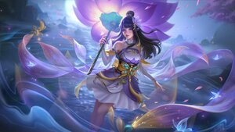

JHONSON (TANQUE)
Johnson, tenía una constitución resistente como una roca. Cuando corrió por el domo del estadio como un camión pesado, los vítores de sus fanáticos y niñas estallaron en voz alta. Siempre llevó a su equipo a levantar el trofeo de campeón y logró la cima de su vida como súper mariscal de campo, con millones de fanáticos a su alrededor.
KAGURA (MAGO)
Todo cambió cuando Kagura , el descendiente de Seimei, entró al santuario para orar por primera vez. Antes de que comenzara la ceremonia, la niña huérfana traviesa trepó en secreto a un árbol fuera del santuario para echar un vistazo al altar interior.
LANCELOT (ASESINO)
Como hijo mayor del duque Baroque, Lancelot nació rebelde. Decidido a resistir el matrimonio político que su padre le había arreglado, viajó por el país y llevó una vida licenciosa. Después de ser herido en una pelea de borrachos en una taberna, Lancelot fue rescatado por Odette y finalmente se dio cuenta de lo que realmente anhelaba su corazón. El hijo pródigo hizo un regreso arrepentido y así comenzó su aventura a través de la Tierra del Amanecer.
CHOU (COMBATIENTE)
Desde que Chou puso un pie en la Tierra del Amanecer , descubrió que esta tierra estaba llena de fuertes. Pronto se ganó muchos enemigos, debido a su juventud e imprudencia, pero también hizo algunos amigos. Uno de ellos, siendo Lancelot, quien siempre decía que Chou tenía el peor gusto en ropa. Después de sus constantes quejas, Chou finalmente cambió su atuendo a un estilo totalmente diferente. Entusiasmado con su nuevo estilo, Chou se adentró más en la Tierra del Amanecer , con el objetivo de erradicar el sufrimiento.
NANA (APOYO)
Para tener los medios para controlar la magia en su cuerpo y dejar de causar problemas, Nana fue al Pantano de las Sombras en busca de una fruta mágica con su buena amiga Molina. Pero cuando llegó el peligro, Molina murió protegiendo a Nana. Aunque Nana consiguió lo que quería, también perdió a su amiga. Con la fuerza que le dejó Molina, Nana emprendió un nuevo viaje.
LESLEY (TIRADOR)
Después de la muerte de su padre, fue adoptada por la Casa Vance y se convirtió en la hermana de Harley . Lesley consideraba a su hermano menor como todo para ella y seguía protegiendo a Harley en secreto.